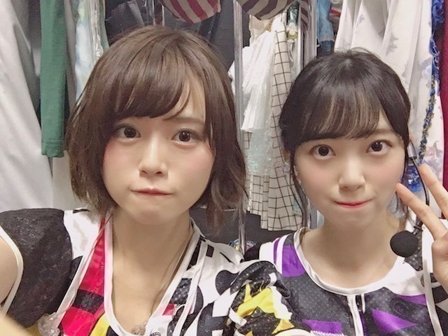
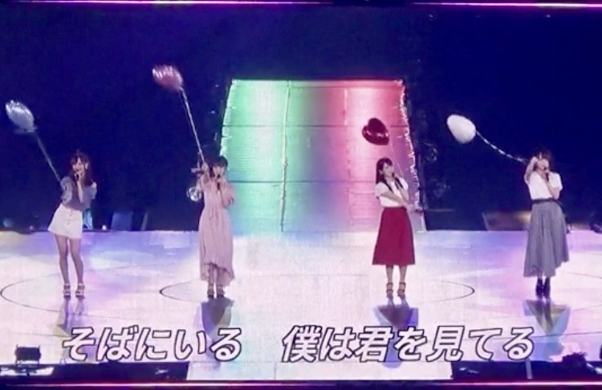
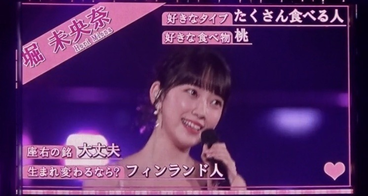
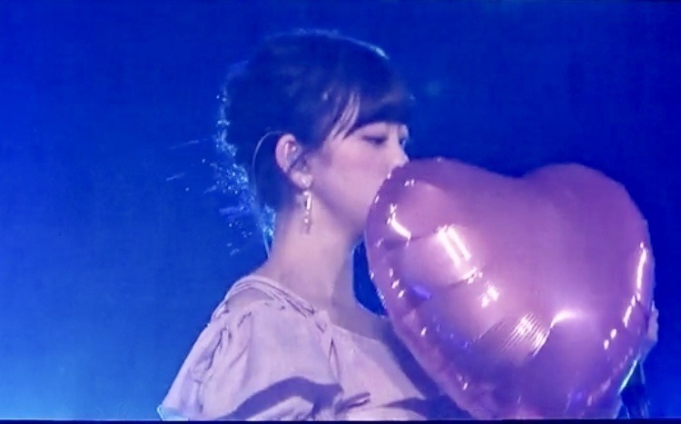
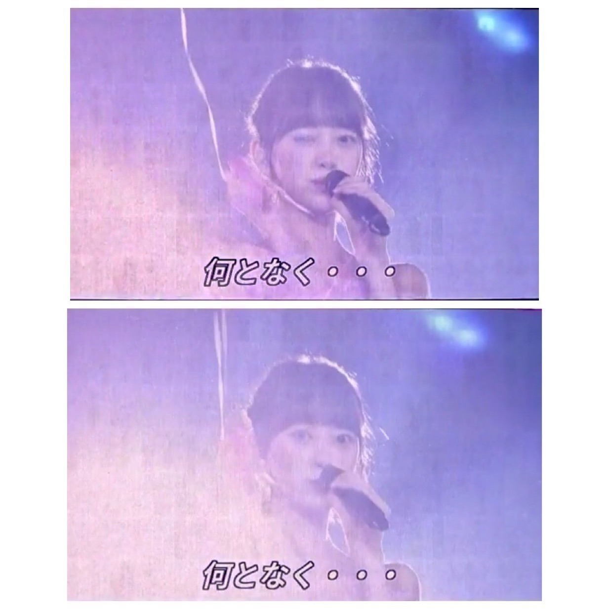

2018/0903Mon不思議だね。

名古屋ドーム2日間のブログを途中まで書いていたので
アップさせていただきます。
来てくださった皆さん
ありがとうございました。
実は、私の体調がライブの3日前から優れず
病院に行き点滴と注射をし何とかステージに立たせていただけることができました
元々扁桃腺が腫れて高熱が出やすかったのもありますが、
本番前に体調を崩してしまった自分が許せず悔しさもあり
苦しくて...
ずっとずっと名古屋ドームに立てる日を楽しみにしていたのでこのまま出られないのは本当に悔しいって思って無理を言い出させていただきました。
もっと身体を強くしなきゃって改めて思いました。
でも、こんなに暑い中
並んで来てくださって
たのしみに待っていてくださってる方がいて
だから私もより
皆さんに会いたい、会いに行かないといけない
っていう強い気持ちが自分の中にずっとあって...
声援やタオルやサイリウムやうちわ
たくさん見えています
100%のパフォーマンスができなくて
ごめんなさい。でも、心の底から
楽しかったです...本当に。
あの景色を見ることができてよかったです
本当に、ありがとうございます
仙台公演は医者とスタッフさんとの話し合いで
出演できませんでしたが会場でメンバーと
ファンの皆さんが私の名前でコールアンドレスポンスをしてくれたと聞いて、嬉しかったです。
またライブできたらいいな...
楽しみにしていてくださった方々
スタッフさん メンバー
ご心配、ご迷惑をおかけして申し訳ありませんでした。
名古屋ドームの初日に実はジコチュープロデュースで"空気感"を披露させていただきました
モニターの写真で少しでも
来られなかった方にお伝えできれば...
サブ地元。名古屋で、
しかもこのほんわかメンバーで披露できて
リハも含め凄く楽しくて
終わったあとにみんなが楽しかったって
言ってくれたのが何よりも嬉しかったです
実はかなり演出にこだわりました

左から楓、私、桃子、れな
まず洋服
頭先から足先まで私が私物を取り入れつつ
メンバーをコーディネートしました
楓はスタイルの良さを生かして
白のショートパンツに
お腹チラ見せで"ヘルシー元気女子"
くすみブルーが
大人っぽくて似合ってました
私はオフショルの淡いピンクワンピースで
メイクもアイシャドウからチークリップまで
ar風ガーリーで"にこにこ系女子"
桃子は上品な感じとちょっと個性的な感じを
出したくて赤を基調にしたお利口スタイルに
しました！本人が着たいって言った服に。
黒髪に赤が華やかでした
"お母さんに紹介したい癒し系女子"
れなはモノトーンのイメージがあるし
現役大学生だから白Tで抜け感を出しつつ
帽子ベルトブーツでいい女感をだして
"何でもできる知的女子"
私服かなっていうくらい着こなしてくれました
みんなの意見も取り入れながら
似合いそうなスタイリングをしてみました〜

あとはこの1人ずつのパーソナルデータ。
私が実際にインタビューをして
スタッフさんに作っていただきました
ありがとうございます
恋愛シュミレーションゲームみたいにしたくて
1人1人違う雰囲気の女の子像で
作らせていただきました

乃木恋リアルも久しぶりで緊張したなぁ。。笑
シチュエーションも
名駅前待ち合わせ(名古屋といえばね！)
付き合って2年(空気感の歌詞より)
と、少し名古屋要素と歌詞の要素を
いれてみました
空気感の歌詞、甘くて好きです

ふわふわとした私のすきな世界観で
本当にジコチューなプロデュースでしたが
幸せでした
ありがとうございました
では。
2018/09/03 14:24
コメント(749)
未央奈さんの元気な姿早くみたいです！！
ブログ更新ありがとう(≧▽≦)ライブお疲れ様m(__)m
体調良くなって良かった(≧▽≦)
体調良くなって良かった(≧▽≦)
無理はあかんよ
体調が悪い時は仲間を頼るべし
抱え過ぎると
パンクしてまうから
元気な笑顔が見たいから
んじゃねー
体調が悪い時は仲間を頼るべし
抱え過ぎると
パンクしてまうから
元気な笑顔が見たいから
んじゃねー
堀ちゃんブログ更新ありがとう^ ^
名古屋ドーム行けなかったから写真だけでも見れて嬉しい！
仙台では残念だったけどまた次の機会がきっとあるはずさ。
心配してたよー。回復してきてよかった。
名古屋ドーム行けなかったから写真だけでも見れて嬉しい！
仙台では残念だったけどまた次の機会がきっとあるはずさ。
心配してたよー。回復してきてよかった。
ブログを書いているところをみると、だいぶ
回復してきたようですね。良かった。
サブ地元のナゴヤドームだもんね。
みおなちゃんの気持ちはとてもわかります。
二日間よく頑張りました。
仙台のひとめぼれスタジアムは空気が澄んで
いて、初秋の木の香もあって、とても気持ち
よかったです。
ひとめぼれスタジアムでライブをできる
アーテイストは少ないと聞きました。だから
スタジアムは乃木坂を待ってくれていると
思います。リベンジしようぜ。
４６時間ＴＶの電視台の時もそうだったけど
みおなちゃんの作り込みは凄いね。
モデルをやってるから、ファッションの描写
が的確で、みおなちゃんのジコチュー企画が
各メンバーの様子と共によくわかりました。
それぞれのメンバーへのファションコーデは
ジコチューというより、
大物スタイリストだね。
回復してきたようですね。良かった。
サブ地元のナゴヤドームだもんね。
みおなちゃんの気持ちはとてもわかります。
二日間よく頑張りました。
仙台のひとめぼれスタジアムは空気が澄んで
いて、初秋の木の香もあって、とても気持ち
よかったです。
ひとめぼれスタジアムでライブをできる
アーテイストは少ないと聞きました。だから
スタジアムは乃木坂を待ってくれていると
思います。リベンジしようぜ。
４６時間ＴＶの電視台の時もそうだったけど
みおなちゃんの作り込みは凄いね。
モデルをやってるから、ファッションの描写
が的確で、みおなちゃんのジコチュー企画が
各メンバーの様子と共によくわかりました。
それぞれのメンバーへのファションコーデは
ジコチューというより、
大物スタイリストだね。
みおな！
ほんとにライブ良かったですよ、、
余韻が抜けません！
空気感のプロデュースめちゃくちゃ可愛かったです！
私もあのお洋服着たいです、、！
バルーンも可愛いですよね♡
メンバーに合うカラーで
パーソナルデータもまとめてあって
みおなが沢山考えてくれたんだなあって
ものすごく嬉しかったです！
乃木恋リアルには絶叫で
私もみおなとデートしたい！！
めちゃくちゃ思いました笑
好き～！は全力でしたよっ
ライブは楽しんだもんがち☺
サイリウム振って筋肉痛になりました、、
普段運動してないからですね…！
頑張って運動しますっ
どの曲でも全力で踊ってて
可愛くて綺麗でちょっと儚いとこもあって、、！
みおなに引き込まれました
いつもよりはやくから汗かいてるなあって
思ってたけど、、
体調悪かったんだね、、
無理させちゃってほんとにごめんね
気づけなくてごめんね
みおなのプロ意識の高さ、、！
でもほんとにしっかり休んでください！
元気になった姿を見るのが楽しみです
ファンはずっと待ちます応援します
みおなだいすきです
ほんとにライブ良かったですよ、、
余韻が抜けません！
空気感のプロデュースめちゃくちゃ可愛かったです！
私もあのお洋服着たいです、、！
バルーンも可愛いですよね♡
メンバーに合うカラーで
パーソナルデータもまとめてあって
みおなが沢山考えてくれたんだなあって
ものすごく嬉しかったです！
乃木恋リアルには絶叫で
私もみおなとデートしたい！！
めちゃくちゃ思いました笑
好き～！は全力でしたよっ
ライブは楽しんだもんがち☺
サイリウム振って筋肉痛になりました、、
普段運動してないからですね…！
頑張って運動しますっ
どの曲でも全力で踊ってて
可愛くて綺麗でちょっと儚いとこもあって、、！
みおなに引き込まれました
いつもよりはやくから汗かいてるなあって
思ってたけど、、
体調悪かったんだね、、
無理させちゃってほんとにごめんね
気づけなくてごめんね
みおなのプロ意識の高さ、、！
でもほんとにしっかり休んでください！
元気になった姿を見るのが楽しみです
ファンはずっと待ちます応援します
みおなだいすきです
まだ体調万全で無いのに、ブログ更新してくれてありがとう‼️
モバメや755もマメに発信してくれ、未央奈ちゃんのファンで良かったといつも思います。
空気感、凄く良かったです。乃木恋リアルで未央奈推しが更に増えたのでは？
福岡のシークレットグラフティーも見る事がが出来たし、昨日の未央奈ちゃんに向けたコール&レスポンスにも参加でき、最高の夏でした。
次は『おかえりコール』だね
季節の変わり目で不安定な気候なので、くれぐれも油断せずゆっくり体調整えて下さい。
人前に立つ仕事で大変な事は絶えないだろうけど、未央奈ちゃんがストレスよりも楽しさややり甲斐を感じられるよう、全力で応援し続けます❣️
モバメや755もマメに発信してくれ、未央奈ちゃんのファンで良かったといつも思います。
空気感、凄く良かったです。乃木恋リアルで未央奈推しが更に増えたのでは？
福岡のシークレットグラフティーも見る事がが出来たし、昨日の未央奈ちゃんに向けたコール&レスポンスにも参加でき、最高の夏でした。
次は『おかえりコール』だね
季節の変わり目で不安定な気候なので、くれぐれも油断せずゆっくり体調整えて下さい。
人前に立つ仕事で大変な事は絶えないだろうけど、未央奈ちゃんがストレスよりも楽しさややり甲斐を感じられるよう、全力で応援し続けます❣️
堀ちゃん、体調は大丈夫ですか？
扁桃炎を患わしたらしく、私には縁がなく共感はできないけれども
調べてみると誰でも掛かる可能性が高い病気だと知ってビックリ＠＠；
忙しい合間を縫って完治させるのは大変だけれども完治できるといいね！
体調が万全でない中でのライブお疲れさまー
堀ちゃんプロデュースの下、満足いく結果でしたか？
相当拘ったみたいで１人１人に違うキャラの位置づけをする辺り
かなり練りこまれたプロデュースだと思わされました
これから夏から秋へと季節の変わり目ですが、
ひょっとしたら扁桃炎が悪化するかもしれないので気をつけてね
それでは
堀ちゃん、お大事に！
扁桃炎を患わしたらしく、私には縁がなく共感はできないけれども
調べてみると誰でも掛かる可能性が高い病気だと知ってビックリ＠＠；
忙しい合間を縫って完治させるのは大変だけれども完治できるといいね！
体調が万全でない中でのライブお疲れさまー
堀ちゃんプロデュースの下、満足いく結果でしたか？
相当拘ったみたいで１人１人に違うキャラの位置づけをする辺り
かなり練りこまれたプロデュースだと思わされました
これから夏から秋へと季節の変わり目ですが、
ひょっとしたら扁桃炎が悪化するかもしれないので気をつけてね
それでは
堀ちゃん、お大事に！
更新ありがとうございます！
お大事になさってください！
お大事になさってください！
ブログ更新ありがと！！✨
体調悪い中おつかれさまでした！！
未央奈が頑張ってたのナゴヤドームでしっかり目に収めてきました！次の握手会、参加できるかわからないけど行けたらいくので、ぜひ会いたいです！！
今は扁桃炎をしっかり治してください！！
帰ってくるのを待ってます！
体調悪い中おつかれさまでした！！
未央奈が頑張ってたのナゴヤドームでしっかり目に収めてきました！次の握手会、参加できるかわからないけど行けたらいくので、ぜひ会いたいです！！
今は扁桃炎をしっかり治してください！！
帰ってくるのを待ってます！
ブログ更新ありがとー！
名古屋のジコチュープロデュースよかったです！一人一人洋服から考えてみおなさんらしい素敵なパフォーマンスでした！
仙台は久保ちゃんが復帰してくれて本当に良かったですね。みおなさんも完治するまで気を抜かずにゆっくり休んでください。
名古屋のジコチュープロデュースよかったです！一人一人洋服から考えてみおなさんらしい素敵なパフォーマンスでした！
仙台は久保ちゃんが復帰してくれて本当に良かったですね。みおなさんも完治するまで気を抜かずにゆっくり休んでください。
仙台ファイナル参戦したよ！！
掘ちゃんのタオルにうちわ、ペンライトも買ってずーーっと振ってたよ！！
コール届いたみたいでよかった！
はやくよくなって元気な姿みせてー！！！
おだいじに
掘ちゃんのタオルにうちわ、ペンライトも買ってずーーっと振ってたよ！！
コール届いたみたいでよかった！
はやくよくなって元気な姿みせてー！！！
おだいじに
未央奈ただただ大好きです
堀ちゃんブログ更新ありがとう！
全国ツアー本当にお疲れさまでした。！
ナゴヤドームの二日目に行ったけどとても楽しかった！
まだ暑い日が続くから、体気をつけて頑張ってね。
では。
全国ツアー本当にお疲れさまでした。！
ナゴヤドームの二日目に行ったけどとても楽しかった！
まだ暑い日が続くから、体気をつけて頑張ってね。
では。
こんちわー！
名古屋2日間行ったよ！
ほんと最高のライブだった！ありがとう！
そんな無理してたんね、、
でも、全然そんなん感じないくらい未央奈輝いてた！ジコチュー企画めちゃんこよかったよ！
今は焦らず体良くしてまた元気な姿で戻ってきて！
んじゃ、このへんで！
バイバイ！
名古屋2日間行ったよ！
ほんと最高のライブだった！ありがとう！
そんな無理してたんね、、
でも、全然そんなん感じないくらい未央奈輝いてた！ジコチュー企画めちゃんこよかったよ！
今は焦らず体良くしてまた元気な姿で戻ってきて！
んじゃ、このへんで！
バイバイ！
仙台でコールアンドレスポンスした時は、会場がひとつになった感じがして感動しちゃいました…。ゆっくり治療に専念してね！また元気な未央奈を見れる時を楽しみにしてる！
体調いかがですか？
昨日仙台から会場のみんなで叫んだよ( ˙꒳˙ )みんな元気な姿を待ってるよ！
昨日仙台から会場のみんなで叫んだよ( ˙꒳˙ )みんな元気な姿を待ってるよ！
堀ちゃん、ブログ更新ありがとう。
名古屋ドームは堀ちゃんにとって特別な場所なんだね。
無理してでも最後までライブできて本当に良かったね。
今はゆっくり休んではやく回復するといいね。
名古屋ドームは堀ちゃんにとって特別な場所なんだね。
無理してでも最後までライブできて本当に良かったね。
今はゆっくり休んではやく回復するといいね。
未央奈ちゃんお大事に！！
宮城ファイナルで、早く治れ〜って思ってコールしました
扁桃炎になる人は本当に頻繁になるから気をつけてください
私も頻繁になる人でしたが、ビタミン取る&タバコ止める&無理な遊び方（徹夜、寝不足）しなくなったら頻度が激減しました
あんまり頻繁に扁桃炎にかかっていると、扁桃腺を取ることも薦められるらしいですね
とりあえず今はゆっくりして、身体と心の健康に気をつけてお過ごしください
扁桃炎になる人は本当に頻繁になるから気をつけてください
私も頻繁になる人でしたが、ビタミン取る&タバコ止める&無理な遊び方（徹夜、寝不足）しなくなったら頻度が激減しました
あんまり頻繁に扁桃炎にかかっていると、扁桃腺を取ることも薦められるらしいですね
とりあえず今はゆっくりして、身体と心の健康に気をつけてお過ごしください
素敵なジコチュープロデュースでした！
みんなのコーデも完璧で、みんな可愛い！こんな恋愛シュミレーションゲームあったら、1人の女の子を選べない優柔不断主人公野郎になって、ボッチエンドルート確定です（笑）
堀未央奈の元気な笑顔が見たい。焦らず体調整えてくださいな。これからも応援いたしております！
みんなのコーデも完璧で、みんな可愛い！こんな恋愛シュミレーションゲームあったら、1人の女の子を選べない優柔不断主人公野郎になって、ボッチエンドルート確定です（笑）
堀未央奈の元気な笑顔が見たい。焦らず体調整えてくださいな。これからも応援いたしております！
自分も扁桃腺ですぐ熱が出てましたが、ご飯食べる前にうがい手洗いを欠かさずしたら出なくなりましたよ
扁桃腺はツラいからね。
自分も、飲み食いが出来ず悶絶した思い出があります。
自分も、飲み食いが出来ず悶絶した思い出があります。
堀さんから送られてくるモバメを見るたびに、ああ堀さん元気になってるんだ！って思って嬉しい気持ちです
名古屋ドーム2日とも行きました！
堀さんが体調悪いということに気づいてなかった自分が不甲斐ないです…
堀さん、体調悪い中名古屋ドーム出てくれて本当にありがとうこざいました
体調が悪いなんてことが全然わからないほどのパフォーマンスをする堀さんはさすがだなって思いました！
また元気で笑顔でパフォーマンスする堀さんを見たいです！！
空気感、自分は空気感大好きだったのでまさか聞けるなんて思ってなかったし、しかもそれを堀さんがプロデュースするなんてもう自分にとっては一石二鳥で嬉しかったです！
他のメンバーも堀さんがコーディネートしたって知って、めっちゃみんな可愛い服だったなあ
堀さんが一番可愛かったですよもちろん 笑
モニターで、どのメンバーが好き？っていう感じのテロップが出てて、自分の席の周りの人はほとんどの人が、未央奈ーー！！って叫んでたので、自分も負けじと大声出しました！笑
乃木恋リアルもめちゃくちゃ最高でした！
一昨年の全ツは行けなかったので乃木恋リアルは初めて生で観れたのですが、まさか堀さんがやってくれるなんて、、
メンバーが誰がな〜ってなってて、ルーレットが堀さんに止まった時は嬉しすぎてめちゃくちゃ大声でよっしゃー！って叫んじゃいました（笑）
堀さんの言葉に一つ一つに全部、はーい！とか、好きー！とか反応しちゃって、めちゃくちゃ楽しかったです！！
もう名古屋最高でした！！！
堀さんの個別推しメンタオルと堀さんのサイリウムカラーにしてサイリウム振ってたら、スタンドでしたが堀さんにでっかいトロッコから指差して手振ってもらえた気がします！
ぼくはそれだけで満足です！笑
堀さん大好きです
名古屋ドーム2日とも行きました！
堀さんが体調悪いということに気づいてなかった自分が不甲斐ないです…
堀さん、体調悪い中名古屋ドーム出てくれて本当にありがとうこざいました
体調が悪いなんてことが全然わからないほどのパフォーマンスをする堀さんはさすがだなって思いました！
また元気で笑顔でパフォーマンスする堀さんを見たいです！！
空気感、自分は空気感大好きだったのでまさか聞けるなんて思ってなかったし、しかもそれを堀さんがプロデュースするなんてもう自分にとっては一石二鳥で嬉しかったです！
他のメンバーも堀さんがコーディネートしたって知って、めっちゃみんな可愛い服だったなあ
堀さんが一番可愛かったですよもちろん 笑
モニターで、どのメンバーが好き？っていう感じのテロップが出てて、自分の席の周りの人はほとんどの人が、未央奈ーー！！って叫んでたので、自分も負けじと大声出しました！笑
乃木恋リアルもめちゃくちゃ最高でした！
一昨年の全ツは行けなかったので乃木恋リアルは初めて生で観れたのですが、まさか堀さんがやってくれるなんて、、
メンバーが誰がな〜ってなってて、ルーレットが堀さんに止まった時は嬉しすぎてめちゃくちゃ大声でよっしゃー！って叫んじゃいました（笑）
堀さんの言葉に一つ一つに全部、はーい！とか、好きー！とか反応しちゃって、めちゃくちゃ楽しかったです！！
もう名古屋最高でした！！！
堀さんの個別推しメンタオルと堀さんのサイリウムカラーにしてサイリウム振ってたら、スタンドでしたが堀さんにでっかいトロッコから指差して手振ってもらえた気がします！
ぼくはそれだけで満足です！笑
堀さん大好きです
堀ちゃん、こんにちは。
体調、無理しないでね！
ナゴド、初日行きました！
空気感、良かったですよ！
空気感、なんか久しぶりに聴いた気もしました。
そして、私、スタンド奥の方にいたのですが、視力が良くないため、ライブ中はほとんど肉眼でメンバーを識別できなかったのです。
ですが、空気感だけは衣装が個別だったので、肉眼でも識別でましたよ！
風船が可愛かったです！
AKB48さんの曲（何だったっけ？3人で風船もって歌う曲）彷彿とさせましたね！
じゃーね！！
体調、無理しないでね！
ナゴド、初日行きました！
空気感、良かったですよ！
空気感、なんか久しぶりに聴いた気もしました。
そして、私、スタンド奥の方にいたのですが、視力が良くないため、ライブ中はほとんど肉眼でメンバーを識別できなかったのです。
ですが、空気感だけは衣装が個別だったので、肉眼でも識別でましたよ！
風船が可愛かったです！
AKB48さんの曲（何だったっけ？3人で風船もって歌う曲）彷彿とさせましたね！
じゃーね！！
扁桃炎なりやすいのわかる！
でも筋トレ始めてジム通いだしてからアミノ酸とかビタミンとかオメガ3とか取るようにしたら、熱出なくなった！
毎年4.5回は扁桃炎にやられてたんだけどね、しなくなったよ
あと扁桃炎なる人って鼻がつまりがちだから、
鼻のケアも大事だよー
でも筋トレ始めてジム通いだしてからアミノ酸とかビタミンとかオメガ3とか取るようにしたら、熱出なくなった！
毎年4.5回は扁桃炎にやられてたんだけどね、しなくなったよ
あと扁桃炎なる人って鼻がつまりがちだから、
鼻のケアも大事だよー
素敵なプロデュース！みんなそれぞれよく似合ってる
体調早く万全に戻るようお祈りしてます
体調早く万全に戻るようお祈りしてます
仙台のファイナルライブで最後にみんなでコールアンドレスポンスをしたんだけど、みおなに届いたかな？
あとでメンバーに聞いてみてね
お大事に！
あとでメンバーに聞いてみてね
お大事に！
未央奈ブログ更新ありがとー！笑
体調はどうですか？
まだ無理はしないようね！笑
早く元気な姿見たいけどでも、ほんとに無理はしちゃーいけんよ！
またライブで元気な姿見たいよー！
お大事にー！
未央奈大好き！
体調はどうですか？
まだ無理はしないようね！笑
早く元気な姿見たいけどでも、ほんとに無理はしちゃーいけんよ！
またライブで元気な姿見たいよー！
お大事にー！
未央奈大好き！
チャァオ～～!☆彡
わぁ～～おぉ～～⤴⤴⤴❕
写メの好きな人のタイプ❕❤❤❤❤❤笑顔
たくさん食べる人❕・・・
ミオッキ～～～～⤴⤴⤴
そりゃ～～わかるけどさぁ～～～⤴⤴
私だって、いっぱい食べられるけどさぁ～～～⤴⤴
成人病になったら～～～～⤴⤴
めちゃめちゃ怖いんだよぉ～～⤴⤴⤴❕笑顔
なってからでは厳しいよぉ～～～⤴⤴⤴❕❤❤❤❤❤笑顔
本当だよぉ～～⤴⤴⤴❕❤❤❤❤❤❤❤❤笑顔
セーブするのが１番❕❤❤❤❤❤❤❤笑顔
腹八分目が１番さぁ～～～⤴⤴❕❤❤❤❤❤❤❤笑顔
☆大人しい、おすまし！より☆彡
堀ちゃぁぁーん！体調はどうですか？
今回の堀ちゃんの判断は正しいと思う！無理して体がダメになっちゃうよりは休養したほうがいい！過去のことは過ぎたことだから、前向きに前を向いていこう！そして、また堀ちゃんが元気100%で楽しむ姿が見られるまでずっと待ってます！！
今回の堀ちゃんの判断は正しいと思う！無理して体がダメになっちゃうよりは休養したほうがいい！過去のことは過ぎたことだから、前向きに前を向いていこう！そして、また堀ちゃんが元気100%で楽しむ姿が見られるまでずっと待ってます！！
よく寝て、よく食べて、元気倍増 ☺
体調バッチリ整えてね
みおなが元気になるのを僕らはずっと待ってるので自分のペースで体調を治してください
体調良くなっているみたいでよかったです！！
でも、頑張りすぎないでくださいね！！
名古屋のジコチュープロデュース死ぬほど可愛かったです、
むしろ一回死にました（＾_＾）
今年も楽しい夏をありがとうございました！
全国ツアーお疲れ様でした！！！
でも、頑張りすぎないでくださいね！！
名古屋のジコチュープロデュース死ぬほど可愛かったです、
むしろ一回死にました（＾_＾）
今年も楽しい夏をありがとうございました！
全国ツアーお疲れ様でした！！！
未央奈ちゃんブログ更新有難う！
きっと大変なのに、辛いのに、７５５とかも更新有難う。未央奈ちゃんのファン想いなとこ大好きです……！でもでも、本当に無理はしないでくださいね！
空気感、こんな感じだったんだ〜すっごい凝ってて素敵^^*映像化されることを願ってます、、！
待ってるからね♪大好きです！
きっと大変なのに、辛いのに、７５５とかも更新有難う。未央奈ちゃんのファン想いなとこ大好きです……！でもでも、本当に無理はしないでくださいね！
空気感、こんな感じだったんだ〜すっごい凝ってて素敵^^*映像化されることを願ってます、、！
待ってるからね♪大好きです！
未央奈体調大丈夫！？
心配してる
未央奈の為にももう一度ライブをお願いします！
心配してる
未央奈の為にももう一度ライブをお願いします！
未央奈ちゃん♪こんにちは＼(^o^)／
無理して身体強くしなくても大丈夫だよ。
あんまり無理しないようにね。
謝らなくて大丈夫だよ。
未央奈ちゃんが楽しめて良かったよ(*^^*)
またライブできたら良いね。
モニターの写真すごく良いね(≧▽≦)
伝わってるよ＼(*⌒0⌒)ｂ♪
ありがとうね(*^^*)
未央奈ちゃんのパーソナルデータ良いね♪
未央奈ちゃんの好きな世界観で良かったね(*^^*)
体調が良くなりますように。
ずっと大好きだよ。
応援してるよ(#^.^#)
またね♪
未央奈ちゃん神推し
秀喜より！(≧▽≦)
無理して身体強くしなくても大丈夫だよ。
あんまり無理しないようにね。
謝らなくて大丈夫だよ。
未央奈ちゃんが楽しめて良かったよ(*^^*)
またライブできたら良いね。
モニターの写真すごく良いね(≧▽≦)
伝わってるよ＼(*⌒0⌒)ｂ♪
ありがとうね(*^^*)
未央奈ちゃんのパーソナルデータ良いね♪
未央奈ちゃんの好きな世界観で良かったね(*^^*)
体調が良くなりますように。
ずっと大好きだよ。
応援してるよ(#^.^#)
またね♪
未央奈ちゃん神推し
秀喜より！(≧▽≦)
堀ちゃんが本気で頑張ってる、
本気で乃木坂のこと考えてる、
本気で俺たちのことを思ってくれていることが伝わってきました。
今は体調を治すことを優先してください！
そして、いつかまた元気な堀ちゃんを見たいです！
お大事に！待ってるよー！
本気で乃木坂のこと考えてる、
本気で俺たちのことを思ってくれていることが伝わってきました。
今は体調を治すことを優先してください！
そして、いつかまた元気な堀ちゃんを見たいです！
お大事に！待ってるよー！
未央奈ブログ更新ありがとう
体調大丈夫かな？しっかり治ってから復帰してね
未央奈無理しそうだから少し心配(*´Д`)
元気な笑顔待ってます
体調大丈夫かな？しっかり治ってから復帰してね
未央奈無理しそうだから少し心配(*´Д`)
元気な笑顔待ってます
あんまり無理しすぎないでね！！
更新ありがとう！ お大事に
更新ありがとう！ お大事に
お疲れさまです
お大事にしてください
お大事にしてください
みおな、頑張ってね！負けるなよ！
堀 未央奈 様
真夏の全国ツアー２０１８
お疲れ様でした！
そして、名古屋公演も体調が芳しくない中、出演してくれて本当にありがとう。
名古屋は２日目のみ参加で、未央奈ちゃんも元気に『ただいま』って言ってたから、体調がそんな状態だったとは………。
昨日の仙台公演で、会場全員で未央奈ちゃんの名前を叫んだんだよ。
届いたかな？ww
自分はシンクロニシティ新規だけど、やっぱり乃木坂４６は誰一人として欠けちゃダメなんだなって心底思いました。
忙しすぎて、なかなかゆっくり出来る時間は無いかもしれないけど、無理せずに。
まだまだ暑い日は続きますから、お身体にはお気を付けて。
真夏の全国ツアー２０１８
お疲れ様でした！
そして、名古屋公演も体調が芳しくない中、出演してくれて本当にありがとう。
名古屋は２日目のみ参加で、未央奈ちゃんも元気に『ただいま』って言ってたから、体調がそんな状態だったとは………。
昨日の仙台公演で、会場全員で未央奈ちゃんの名前を叫んだんだよ。
届いたかな？ww
自分はシンクロニシティ新規だけど、やっぱり乃木坂４６は誰一人として欠けちゃダメなんだなって心底思いました。
忙しすぎて、なかなかゆっくり出来る時間は無いかもしれないけど、無理せずに。
まだまだ暑い日は続きますから、お身体にはお気を付けて。
堀さんのファンを楽しませたいという熱い気持ちが伝わってきます
苦しい中で精一杯頑張ってたのかと思ったら心から拍手を贈りたくなった(*ﾟ▽ﾟﾉﾉﾞ☆
前のブログにも書いたけど
どうか精一杯やった自分を責めないでね(*´﹀`*)
元気が一番ですぞ(๑•̀ㅂ•́)و✧
苦しい中で精一杯頑張ってたのかと思ったら心から拍手を贈りたくなった(*ﾟ▽ﾟﾉﾉﾞ☆
前のブログにも書いたけど
どうか精一杯やった自分を責めないでね(*´﹀`*)
元気が一番ですぞ(๑•̀ㅂ•́)و✧
ゆっくり休んで、はよ元気になりゃーよ！！
みおちゃん、いつまでも、待っとるで。
愛知県民から言えば、岐阜はサブ地元だで。
大好きやお。
とりあえず、万全な状態で戻ってこやー。
愛知県民から言えば、岐阜はサブ地元だで。
大好きやお。
とりあえず、万全な状態で戻ってこやー。
今はゆっくり休んで、静養してね！！
しっかり治ったら、またライブで元気なみおなを見せてください！！
しっかり治ったら、またライブで元気なみおなを見せてください！！
未央奈、体調はもう大丈夫？
仙台、未央奈出られなくて、残念だったけど、モニターに動画で、未央奈が出たとき、未央奈だって、感動していました。
また、いつもの未央奈を、見せて下さい。
仙台、未央奈出られなくて、残念だったけど、モニターに動画で、未央奈が出たとき、未央奈だって、感動していました。
また、いつもの未央奈を、見せて下さい。
好き


前向きにFight(*^▽^*)